방재기사 (2021-05-15 기출문제)
1과목: 재난관리
1. 호우경보 발령 기준으로 옳은 것은?
- 3시간 강우량이 60mm 이상 예상될 때
- 3시간 강우량이 90mm 이상 예상될 때
- 12시간 강우량이 110mm 이상 예상될 때
- 12시간 강우량이 150mm 이상 예상될 때
(정답률: 알수없음)

2. 재난 및 안전관리 기본법령상 지역통제단장이 할 수 없는 응급조치는?
- 전화에 관한 응급조치
- 현장지휘통신체계의 확보
- 긴급수송 및 구조수단의 확보
- 급수 수단의 확보, 긴급피난처 및 구호품의 확보
(정답률: 알수없음)
3. 자연재해대책법령상 지구단위종합복구계획수립 대상 지역에 해당하지 않는 것은?
- 어촌·어항법에 따른 항로표지등 항행보조시설의 일괄복구가 필요한지역
- 산사태 또는 토석류로 인하여 하천유로변경등이 발생한지역으로서 근원적 복구가 필요한 지역
- 피해 재발방지를 위하여 기능복원보다는 피해지역 전체를 조망한 예방·정비가 필요하다고 인정되는 지역
- 도로·하천등의 시설물에 복합적으로 피해가 발생하여 시설물별 복구보다는 일괄 복구가 필요한 지역
(정답률: 알수없음)
4. 재난 및 안전관리 기본법령상 자연재난에 해당되지 않는 것은?
- 태풍
- 황사
- 폭염
- 미세먼지
(정답률: 알수없음)
5. 재난관리기준상 복구계획을 수립 시 고려사항으로 명시되지 않는 것은?
- 피해 시설물의 중요정도
- 예방조치를 위한 가용재원
- 재난피해가 국민에게 미치는 영향
- 인명피해를 유발할수 있는 시설 여부 판단
(정답률: 알수없음)
6. 재해구호법령상 응급구호 및 재해구호 상황의 보고에 관한 사항중 ( )안에 들어갈 대상으로 옳은 것은?
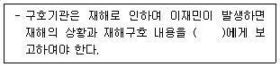
- 시·도지사
- 구호지원기관의 장
- 행정안전부장관
- 지역보호센터의 장
(정답률: 알수없음)
7. 자연재해대책법령상 방재관리대책 대행자가 대행할 수 있는 방재관리대책 업무로 틀린 것은? (단, 그 밖에 대통령령으로 정하는 방재관리대첵에 관한 업무는 제외한다.)
- 비상대처계획 수립
- 우수유출저감대책의 평가
- 재해복구사업의 분석·평가
- 자연재해저감 종합계획의 수립
(정답률: 알수없음)
8. 재난 및 안전관리 기본법령상 다중이요시설등의 위기상황 매뉴얼을 작성·관리하여야 하는 대상으로 명시되지 않는 자는?
- 관리자
- 소유자
- 설계자
- 점유자
(정답률: 알수없음)
9. 재난 및 안전관리 기본법령상 중앙안전관리위원회의 위원장은?
- 대통령
- 경찰청장
- 행정안전부장관
- 국무총리
(정답률: 알수없음)
10. 재난 및 안전관리기본법령상 재난관리책임기관의 장의 재난예방조치에 관한 설명으로 틀린 것은?
- 재난관리책임기관의 장은 재난예방조치를 효율적으로 시행하기 위하여 필요한 사업비를 확보하여야한다.
- 재난관리책임기관의 장은 재난관리의 실효성을 확보할수 있도록 안전관리체계 및 안전관리 규정을 정비⁕보완하여야 한다.
- 재난관리책임기관의 장은 기능연속성계획을 수립·시행하여야한다.
- 재난관리 책임기관의 장은 기능연속성계획을 변경할 경우에는 3개월 이내에 행정안전부 장관에게 통보하여야 한다.
(정답률: 알수없음)
11. 재난 및 안전관리기본법령상 훈련주관기관의 장이 실시하는 재난대비훈련 편가항목으로 명시되지 않는 것은?
- 재해구호시설물 안전점검 실시
- 유관기관과의 협력체제 구축실태
- 장비의 종류·기능 및 수량 등 동원실태
- 분야별 전문인력 참여도 및 훈련목표 달성정도
(정답률: 알수없음)
12. 재난 및 안전관리 기본법령상 재난분야 위기관리 매뉴얼 작성·운영에 관한 설명으로 틀린 것은?
- 재난관리책임기관의 장은 재난유형에 따라 위기관리 매뉴얼을 작성·운영한다.
- 국무총리는 재난유형별 위기관리 매뉴얼협의회를 구성·운영한다.
- 위기관리 매뉴얼 유형은 위기관리 표준매뉴얼, 위기대응 실무매뉴얼, 현장조치 행동매뉴얼이 있다.
- 재난관리주관기관의 장은 위기관리 표준매뉴얼 및 위기대응 실무매뉴얼을 정기적으로 점검하여야 한다.
(정답률: 알수없음)
13. 재난 및 안전관리 기본법령상 산불사고의 재난관리주관기관은?
- 소방청
- 환경부
- 산림청
- 행정안전부
(정답률: 알수없음)
14. 재난 및 안전관리 기본법령상 안전점검의날과 방재의날을 바르게 나열한 것은?
- 매월 4일, 매년 4월 25일
- 매월 4일, 매년 5월 25일
- 매월 25일, 매년 4월 25일
- 매월 25일, 매년 5월 25일
(정답률: 알수없음)
15. 자연재해대책법령상 비상대처계획을 수립하여야하는 내진설계 대상시설물이 아닌것은
- 「공항운영법」에 따른 항공기
- 「항만법」에 따른 항만시설 중 방파제
- 「도시철도법」에 따른 도시철도 중 철도모노레일
- 「철도산업발전 기본법」에 따른 철도시설중 철도의 선로
(정답률: 알수없음)
16. 재난 및 안전관리 기본법령상 재난자원의 비축·관리에 관한 설명중 틀린 것은?
- 재난관리자원공동활용시스템 구축·운영에 관한 업무는 행정안전부장관소관이다.
- 감염병환자등의 진료 또는 격리를 위한 시설도 재난관리자원에 해당된다.
- 행정안전부장관은 매년 12월31일까지 재난관리자원에 대한 비축·관리계획의 수립을 지원하기 위한 지침을 마련하여야 한다.
- 재난관리책임기관의 장은 매년 10월 31일까지 다음 해의 재난관리자원에 대한 비축 관리계획을 수립하고 이를 행정안전부장관에게 제출하여야한다.
(정답률: 알수없음)
17. 자연재해대책법령상 방재성능 평가 및 통합개선대책의 수립·시행해야 하는 방재시설을 모두 고른 것은?
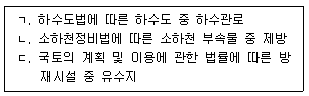
- ㄱ, ㄴ
- ㄱ, ㄷ
- ㄴ, ㄷ
- ㄱ, ㄴ, ㄷ
(정답률: 알수없음)
18. 재난 및 안전관리 기본법령상 다음의 사례에 해당하는 재난의유형은?
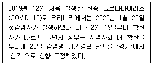
- 해외재난
- 자연재난
- 사회재난
- 복합재난
(정답률: 알수없음)
19. 자연재난 구호 및 복구비용 부담기준등에 관한 규정상 국고 추가지원을 산정시 고려되지 않는 것은?
- 풍수해 예방 보험료
- 행정안전부장관이 정하는 가감률
- 재해예방 노력지수에 따른 추가 지원율
- 최근 3년간 평균 재정력지수에 따른 추가 지원율
(정답률: 알수없음)
20. 재해복구사엽의 분석·평가 시행 지침상 재해복구사업 분석·평가결과를 반영·활용 하여야 하는 관련계획 및 기준이 아닌 것은?
- 재해영향평가등의 협의
- 소하천정비중기계획 수립
- 자연재해위험개선지구의 지정
- 시·군 자연재해 저감 종합계획의 수립
(정답률: 알수없음)
2과목: 방재시설
21. 자연재해저감 종합계획 세부수립기준상 자연재해 위험지구 후보지 선정을 위해 주어진 조건으로 간략 위험도 지수를 산정한 값은?
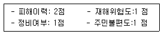
- 1.4
- 1.6
- 1.8
- 2.0
(정답률: 알수없음)
22. 재해연보에 의거한 과거에 발생한 재해이력현황조사 시 필요한 항목을 모두 고른 것은?
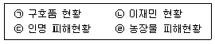
- ㉠, ㉡, ㉢
- ㉠, ㉡, ㉣
- ㉡, ㉢, ㉣
- ㉠, ㉡, ㉢, ㉣
(정답률: 알수없음)
23. 하천 현황조사시 포함되어야 할 사항이 아닌 것은?
- 하천유역의 토양 현황
- 하천명, 하천등급, 시·종점에 관한 사항
- 하천홍수 범람에 따른 위험 지역에 관한 사항
- 하천과 관련된 수공 구조물 및 횡단 시설물에 관한사항
(정답률: 알수없음)
24. 하천에 설치되는 시설물중 제방 및 호안의 재해취약요인의 설명으로 틀린 것은?
- 견간장: 계획 홍수량에 대한 검토
- 비탈경사: 비탈 경사가 급한 정도
- 소류력: 호안 재료의 허용 소류력 적합여부
- 제방고: 계획 홍수위에서 계획홍수량 규모별로 여유고 기준에 적합한지의 여부
(정답률: 알수없음)
25. 다음의 재해 복구 작업상황으로 활동중심일정을 계산했을 때 소요공기로 옳은 것은?
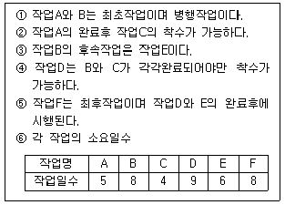
- 20일간
- 22일간
- 24일간
- 26일간
(정답률: 알수없음)
26. 자연현황 조사대상에 해당하지 않는 것은?
- 산업현황
- 하천현황
- 해상현황
- 지질·토양현황
(정답률: 알수없음)
27. 자연재해저감 종합계획 세부수립기준상 구조적 대첵에 해당하는 것은?
- 하도정비
- 재해지도
- 홍수터 관리
- 댐 운영체계 개선
(정답률: 알수없음)
28. 자연재해위험개선지구 정비계획 수립시 검토사항으로 모두고른 것은?
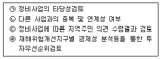
- ㉠, ㉡
- ㉠, ㉢, ㉣
- ㉡, ㉢, ㉣
- ㉠, ㉡, ㉢, ㉣
(정답률: 알수없음)
29. 자연재해저감 종합계획 세부수립기준상 유역내 과다한 토석류 유출등이 원인이 되어 하천시설 및 공공·사유시설의 침수 및 매몰등의 피해를 유발하는 재해는?
- 토사재
- 하천재해
- 해안재해
- 사면재해
(정답률: 알수없음)
30. 도시침수 피해 현장조사시 지형현황 조사항목이 아닌 것은?
- 육안조사
- 대규모 공사장 현황
- 관내 도로망 현황조사
- GIS 수치지형도를 황용한 표고·경사분석
(정답률: 알수없음)
31. 방재시설 현황조사 대상이 아닌 것은?
- 취입보
- 인공사면
- 수로터널
- 소하천 제방
(정답률: 알수없음)
32. 우리나라 해안에서 발생하는 연안침식의 주요원인이 아닌 것은?
- 항만건설
- 해안도로 건설
- 하수구 폐쇄
- 무분별한 하구 골재채취
(정답률: 알수없음)
33. 상류 산지사면과 계류의 황폐화를 막고 불안정 사면의 고정 토석류의 발생 및 이동을 억제하며 산사태 토석류와 홍수로부터 발생되는 산지재해를 최소화하기 위하여 설치하는 사방시설은?
- 옹벽
- 석축
- 사방댐
- 지오 텍스타일
(정답률: 알수없음)
34. 자연재해저감 종합계획 세부수립기준상 일반현황 조사에 관한 설명으로 틀린 것은?
- 지역연혁은 대상지역의 방재연혁을 최대한 조사하여 기술한다.
- 산업현황은 산업체의 현황 및 분포를 제시한다.
- 인구현황에는 행정구역별 면적, 가구수, 인구수등이 포함된다.
- 인문현황에는 인구, 산업, 행정구역 현황을 기술한다.
(정답률: 알수없음)
35. 사면재해 방지시설물 중 옹벽 시공시 고려사항에 해당되지 않는 것은
- 옹벽이 넘어지지 않게 해야한다.
- 지하수에 의한 수평력에 저항하도록 해야한다.
- 옹벽 자체에 지나친 응력이 생기지 않게 적당한 재료를 선택해야한다.
- 지반 허용지내력 이상의 응력이 실리도록 해야한다.
(정답률: 알수없음)
36. 사면재해의 위험요인으로 옳은 것은?
- 산지침식 및 홍수피해
- 외수위 영향으로 인한 피해
- 우수관거문제로 이한피해
- 사면의 과도한 굴착등으로 인한 붕괴
(정답률: 알수없음)
37. 시·군 등 풍수해저감종합계획 세부수립기준상 시설정비 관련계획에 해당하지 않는 것은?
- 사방계획
- 하천기본계획
- 연안정비계획
- 지역안전도 진단
(정답률: 알수없음)
38. 산지지역에 취약한 재해유형으로 적합한 것은?
- 태풍
- 토석류
- 해일
- 내수침수
(정답률: 알수없음)
39. 자연재해저감 종합계획 세부수립기준상 주요 자연재해 특성분석에 관한 사항으로 틀린 것은?
- 기상개황은 자연재해 발생기간내의 강우량, 풍속, 풍향, 적설량등을 기술한다.
- 주요자연재해 특성분석내용은 위험지구 예비후보지 대상선정시 제외한다.
- 자연재해 원인특성은 해당재해별 특성을 구분하여 분석한다.
- 피해현황은 국가재난관리정보시스템(NDMS)자룔르 토대로한다.
(정답률: 알수없음)
40. 지진해일이 수심 4500m에서 발생했을 때 지진해일의 전파속도는? (단, 중력가속도는 9.8m/s2이다.)
- 210 m/s
- 250 m/s
- 300 m/s
- 350 m/s
(정답률: 알수없음)
3과목: 재해분석
41. 방재시설물의 개선대책에 대한 설명으로 틀린 것은?
- 하수도법에 따른 하수도기본계획과의 연계성을 검토한다.
- 1차적으로 유하시설은 하수도정비기본계획에서 제시한 통수단면적 기준으로 확장한다.
- 저류시설을 축소하여 유하시설 처리능력을 초과하는 홍수량에 대비한다.
- 배수펌프장 설치가 어려운 지역은 유역대책 시설 및 예·경보시스템 도입등 비구조적 대책을 수립한다.
(정답률: 알수없음)
42. 지역별 방재성능목표에서 공표하는 강우량 지속기간이 아닌 것은?
- 1시간
- 2시간
- 3시간
- 4시간
(정답률: 알수없음)
43. 재해복구사업의 분석·평가 시행지침상 지역경제 발전성 평가와 평가항복이 아닌 것은?
- 낙후지역 개선효과
- 지역경제 타당성 정도
- 지역 경제적 파급효과
- 지역산업의 활성화정도
(정답률: 알수없음)
44. 자연대책법령상 지역별 방재성능목표 설정⁕운용에 관한 설명이다. ( ) 안에 들어갈 숫자의 연결이 옳은 것은?
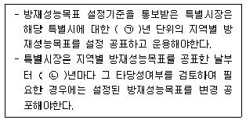
- ㉠ 5, ㉡ 5
- ㉠ 5, ㉡ 10
- ㉠ 10, ㉡ 5
- ㉠ 10, ㉡ 10
(정답률: 알수없음)
45. 지역별 방재성능 목표설정·운영기준상 통합개선대책 수립 절차에 관한 설명으로 틀린 것은?
- 신설·확장하는 방재시설의 개선사업비와 홍수부담량의 비를 산정하여 평가지수를 결정한다.
- 톤당 처리하는 비용이 낮은 사업을 우선순위로 선정될수 있도록 “방재성능 개선대책사업” 최적안을 결정한다.
- 용량부족 관로를 해소할수 있는 저류시설의 규모 및 위치를 결정하여 1차적으로 결정된 유하시설의 사업비와 비교 후 결정한다.
- 개선 계획한 방재시설의 방재성능이 방재성능목표를 상회하는 경우 신설·확장시설을 확정 전에 사업비 및 부담량을 결정하여야 한다.
(정답률: 알수없음)
46. 지역별 방재성능폭표 설정·운영기준상 다음 조건일 때 A지역의 방재성능목표 강우량(mm/h)은? (단, 지역별 방재성능목표 산정방법을 적용하며 지속기간은1시간으로 한다.)
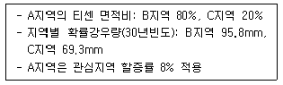
- 90
- 95
- 100
- 1⑤
(정답률: 알수없음)
47. 빗물펌프장의 용량부족으로 인한 침수발생 시 개선대책이 아닌 것은?
- 하수관거 신규설치
- 빗물펌프의 용량 증설
- 빗물펌프장과 연결된 유수지역 용량 증설
- 고지배수로 설치에 따른 고지 및 저지유역분리
(정답률: 알수없음)
48. 재해복구사업의 분석·평가 시행지침상 다음에서 설명하는 용어로 옳은 것은?
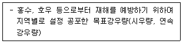
- 방재성능목표
- 재해저감성 평가
- 재해복구개선평가
- 재해복구 효율성평가
(정답률: 알수없음)
49. 특정 지방자치단체의 지역내 방재성능 개선대책 사업대상 선정 및 연차별 정비계획 수립 시 고려사항이 아닌 것은?
- 경제성
- 시공성
- 재해저감성
- 사업지구 내 토지이용상태
(정답률: 알수없음)
50. 산지 토석류 유출로 우수관거가 막혀 침수피해가 발생하였을 때 복합재해 유형은?
- 토사재해-내수재해
- 사면재해-하천재해
- 하천재해-토사재해
- 내수재해-해안재해
(정답률: 알수없음)
51. 자연재해대책법령상 지역안전도 진단 내용에 포함되어야 하는 사항이 아닌 것은?
- 해당 지방자치단체의 피해 발생빈도
- 해당 지방자치단체의 피해 규모의 분석
- 해당 지방자치단체의 피해 저감능력 평가를 위한 진단기준 마련
- 해당 지방자치단체의 피해 저감능력을 진단하기 위한 진단 지표
(정답률: 알수없음)
52. 하천재해 위험요인에 해당하는 것은?
- 하천 통수능 저하
- 하상안정시설 유실
- 하구폐쇄 인한 홍수위 증가
- 우수유입시설 문제로 인한 피해
(정답률: 알수없음)
53. 침수구역 배수를 위한 펌프를 설치하려고 한다 다음조건을 참고했을 때 배수관의 평균 유속(m/s)은?
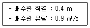
- 4.253
- 5.276
- 6.122
- 7.162
(정답률: 알수없음)
54. 사면재해 발생 위험요인을 모두 고른 것은?
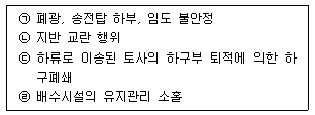
- ㉠, ㉡, ㉢
- ㉠, ㉡, ㉣
- ㉠, ㉢, ㉣
- ㉡, ㉢, ㉣
(정답률: 알수없음)
55. 시·군등 풍수해저감종합계획 세부수립기준상 해안재해 위험요인 분석에 대한 설명중 틀린 것은?
- 정량적 위험요인 평가를 위한 모형은 일정한 형태가 있어야한다.
- 해안재해 위험지구 후보지에 대한 현장조사등을 토대로 위험요인을 분석한다.
- 분석의 공간적 범위는 해당 후보지의 해안수리특성이 재현될수 있는 구역을 선정하도록 한다.
- 현장조사만으로는 위험요인을 평가하기 어려운 경우 정량적 분석기법을 활용하여 위험요인을 분석한다.
(정답률: 알수없음)
56. 재해복구사업의 분석·평가 시행지침상 재해복구사업 분석평가를 통해 도출된 문제점에 대한 개선방안 및 구체적인 활용방안으로 명시되지 않는 것은?
- 재해예방사업의 투자 우선순위
- 자연재해위험개선지구 지정 개선방안
- 재해복구사업 시행에 따른 각 시설물별 개선방안
- 지역발전성과 지역주민 생활환경의 쾌적성 향상방안
(정답률: 알수없음)
57. 과거 발생한 침수피해 현황조사 및 재해발생 원인파악 방법으로 가장거리가 먼 것은?
- 홍수 예경보의 발령 기준파악
- 주민 탐문조사를 통한 침수발생 양상 파악
- 문헌조사를 통한 침수피해 발생지역 및 범위 조사
- 피해지역의 자연재해위험개선지구 지정여부를 파악
(정답률: 알수없음)
58. 방재시설의 유지·관리 평가항목·기준 및 평가방법 등에 관한 고지상 행정안전부장관이 재난관리책임기관 장의 유지⁕관리를 평가해야 하는 방재시설과 시설물 연결이 틀린 것은?
- 소하천 시설 – 제방, 호안
- 어항시설 – 방파제, 방사제
- 농업생산기반시설 – 파제제, 공동구
- 공공하수도시설 – 우수관로, 빗물펌프장
(정답률: 알수없음)
59. 방재성능 향상을 위한 통합 개선대책 사업의 시행과 이에 필요한 예산 및 재원대책 마련 방법으로 틀린 것은?
- 예산확보가 가능한 경우 기본적으로 방재성능 통합 개선대책 사업으로 추진한다.
- 자연재해위험개선지구 지정등 행정사항이 모두 이행되지 않더라도 사업을 추진할수 있다.
- 중기 투자계획과 연간 예산확보 규모를 고려하여 방재성능 통합 개선대책에 필요한 신규 예산을 확보한다.
- 신규 예산 확보가 불가능한 경우 자연재해위험개선지구정비사업 우수유출저감시설 설치사업등 구체적으로 명시한다.
(정답률: 알수없음)
60. RRL 모델에 의한 홍수유출량 산정방법으로 옳은 것은?
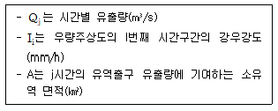
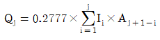
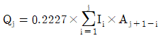
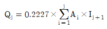
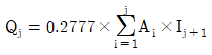
(정답률: 알수없음)
4과목: 재해대책
61. 직경 0.5m인 관로에 유속 2m/s로 물이 흐를 때 100m 구간에서 발생하는 손실수두(m)는? (단, 중력가속도는9.8m/s2, 마찰손실계수는 0.019라 가정한다.)
- 0.457
- 0.776
- 0.899
- 0.928
(정답률: 알수없음)
62. 자연재해위험개선지구 비용편익 분석방법 중 다차원법의 장점에 해당하는 것은?
- 분석범위가 간편법에 비해 폭넓음
- 침수면적 산정 시 홍수빈도개념이 적용되므로 신뢰성이 높음
- 간편법에 비해 분석방법론에 있어서 보편화되어 있음
- 경제성 분석을 위한 소요자료 및 인력 소요가 적음
(정답률: 알수없음)
63. 소하천정비법령상 소하천의 지정기준에 대한 설명이다 ( )안에 들어가야 할 내용이 옳게 연결된 것은?
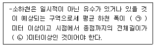
- ㉠ 2, ㉡ 500
- ㉠ 2, ㉡ 1000
- ㉠ 3, ㉡ 500
- ㉠ 3, ㉡ 1000
(정답률: 알수없음)
64. 자연재해대책법령상 우수유출저감대책을 수립할 필요가 없는 사업은? (단, 기타 사항은 고려하지 않음)
- 「농어촌정비법」에 따른 생황환경정비사업
- 「유통산업발전법」에 따른 공동집배송센터의 조성사업
- 「도시 및 주거환경정비법」에 따른 재건축사업
- 「관광진흥법」에 따른 관광지 및 관광단지 개발사업
(정답률: 알수없음)
65. 자연재해대책법령상 자연재해저감 종합계획에 포함되어야 할 사항으로 명시되지 않는 것은?
- 재해위험지구,침수위험지구의 안정성 확보
- 자연재해 재해복구사업의 평가·분석에 관한사항
- 자연재해 예방 및 저감을 위한 종합대책등에 관한 사항
- 지역적 특성 및 계획의 방향·목표에 관한 사항
(정답률: 알수없음)
66. 재해영향평가 시 개발 중 토사유출저감대책에 대한 설명 중 틀린 것은?
- 침사지겸 저류지가 임시구조물인 경우에는 설계빈도를 30년빈도 이상으로 결정한다.
- 영구구조물로 계속활용되는 경우에는 설계빈도를 50년빈도 이상으로 결정할수 있다.
- 가배수로는 유속이 토공수로의 3.0m3/s를 초과하지 않도록 고려하면서 경사와 단면을 계획한다.
- 침사지겸 저류지외 설치 위치 및 개소수는 배수계획에 따라 달라지게 되지만 시공성 및 시공시 위치이동 등을 고려하여 가급적 2개소 이상 설치하여야 한다.
(정답률: 알수없음)
67. 다음 설명은 비탈면 보호공법 중 어느 공법에 해당되는가?
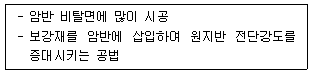
- 록볼트
- 계단식 옹벽
- 비탈면 경사완화
- 쏘일네일링
(정답률: 알수없음)
68. 재해정보지도 작성후 지방자치단체의 장이 검토해야 하는 사항이 아닌 것은?
- 침수 정보
- 현지 조사
- 정보 보안
- 재해정보지도 작성 방침
(정답률: 알수없음)
69. 수계단위 저감대책 수립대상에 적합하지 않는 재해유형은?
- 사면재해
- 토사재해
- 내수재해
- 하천재해
(정답률: 알수없음)
70. 지표의 상태에 따른 1ha당 토사유출량이 나지 200m3/년, 초지 15m3/년, 농경지 2m3/년, 산림 1m3/년이고 토지이용계획 중 나지 1.2ha, 초지0.5ha, 농경지 0.2ha, 산림 0.7ha일 때 토사유출량은?
- 232.7m3/년
- 242.3m3/년
- 244.4m3/년
- 248.6m3/년
(정답률: 알수없음)
71. 표와 같이 소유역 Ⅰ,Ⅱ,Ⅲ 으로 나누어진 유역면적과 유출계수를 가진유역의 전체 홍수량을 평균 유출계수를 계산하여 합리식으로 산정한 값은 얼마인가? (단, 유역의 평균강우강도 = 100 mm/hr이다.)
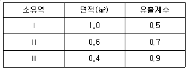
- 17.78m3/s
- 19.45m3/s
- 85.56m3/s
- 38.90m3/s
(정답률: 알수없음)
72. 재해영향평가등의 협의 실무지침상 침사지등의 저류형 구조물에 우수유출저감시설을 계획할 경우 임계지속기간 결정방법은?
- 유입유량이 최대가 되는 강우지속기간
- 방류유량이 최소가 되는 강우지속기간
- 저류시간이 최대가 되는 강우지속기간
- 저류용량이 최대가 되는 강우지속기간
(정답률: 알수없음)
73. 자연재해위험개선지구의 타당성(투자우선순위)평가항목 중 부가평가 항목이 아닌 것은?
- 지속성
- 정책성
- 준비도
- 계획성
(정답률: 알수없음)
74. 피해지역에 대한 침수흔적을 조사하기 위한 풍수해 유형이 아닌 것은?
- 태풍
- 풍랑
- 호우
- 해일
(정답률: 알수없음)
75. 토사침식량 해석을 위한 RUSLE모형의 식에서 사용되지 않는 매개변수는?
- 유사전달률
- 강우침식인자
- 토양침식인자
- 토양보전대책인자(무차원)
(정답률: 알수없음)
76. 재해지도 작성기준등에 관한 지침상 대피장소 지정기준이 아닌 것은?
- 보행거리로 1km이내에 지정
- 차량으로 30분 이내의 거리에 지정
- 학교, 마을회관 등 공공시설에 지정
- 수용규모를 보통 1000명 이하로 지정
(정답률: 알수없음)
77. 사면안정해석 프로그램이 아닌 것은?
- SLIDE
- SLOPE/W
- SEEP/W
- TALREN
(정답률: 알수없음)
78. 재해지도 작성기준등에 관한 지침상 침수예상도에 해당하지 않는 것은?
- 내수침수예상도
- 홍수범람예상도
- 해안침수예상도
- 하천범람예상도
(정답률: 알수없음)
79. 조위분석시 활용할수 있는 전산프로그램으로 옳은 것은?
- POM
- RUSLE
- ADCIRC
- FVOCOM
(정답률: 알수없음)
80. 재해영향평가등의 협의 실무지침상 주차장 저류한계 수심은?
- 10cm
- 20cm
- 30cm
- 40cm
(정답률: 알수없음)
5과목: 방재사업
81. 자연재해대책법령상 방재시설의 유지·관리 평가는 연간 몇 회를 실시해야 하는가?
- 1
- 2
- 3
- 4
(정답률: 알수없음)
82. 1:1.5 의 사면공사의 경우 절취가 가능한 사면의 임계높이는 약 몇 m인가? (단, 점착력=1.0t/m2, 단위중량=1.8t/m3, 내부마찰각=10도)
- 12.41
- 13.21
- 14.41
- 15.21
(정답률: 알수없음)
83. 자연재해위험개선지구 투자우선순위 결정을 위한 비용편익 분석방법중 간편법 편익 산정시 해당되지 않는 항목은?
- 농경지
- 이재민
- 농작물
- 인명손실
(정답률: 알수없음)
84. 집중호우 시 유출토사를 인위적으로 퇴적시켜 유입을 억제하는 침사지 시설의 구성요소가 아닌 것은?
- 침전부
- 홍수조절부
- 자연배수부
- 퇴사저류부
(정답률: 알수없음)
85. 다음과 같이 건설시설물에 대한 값이 주어진 경우 연평균 편익의 현재가치는?
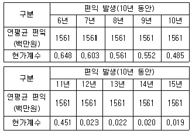
- 296.6백만원
- 528.3백만원
- 1561.0백만원
- 5282.4백만원
(정답률: 알수없음)
86. 시설물의 안전 및 유지관리에 관한 특별법령상 안전등급 A등급의 점검 실시시기로 틀린 것은?
- 성능평가: 5년에 1회이상
- 정밀안전진단: 6년에 1회이상
- 정기안전점검: 반기에 1회이상
- 정말안전점검(건축물): 3년에 1회이상
(정답률: 알수없음)
87. 우수유출 저감시설 중 침투통을 설치할수 있는 지역은?
- 시공지역의 터파기 공사후 물이 5시간동안 0.18cm 이하로 침투되는 토양
- 산사태 위험지역, 급경사지 등 우수침투에 의해 지반의 안정성에 문제가 발생할 우려가 있는 지역
- 지하건물의 밀집등으로 우수침투 시 주변지역의 건물에 누수 등 문제가 발생할 우려가 있는 지역
- 입도분포도에서 점토가 20%를 차지하는 지역
(정답률: 알수없음)
88. 토목구조물의 손상원인 중 재료적 원인이 아닌 것은?
- 하중의 증가
- 알칼리 골재반응
- 콘크리트의 중성화
- 철근 및 강재의 부식
(정답률: 알수없음)
89. 하천 방재시설물 적용공법에 해당하지 않는 것은?
- 침식에 대한 보강
- 월류에 대한 보강
- 제체 침투에 대한 보강
- 관거시설 개량 및 신설
(정답률: 알수없음)
90. 국가를 당사자로 하는 계약에 관한 법령상 하자보수보증금에 관한 설명이다 ( )안에 들어갈 숫자의 연결이 옳은 것은?
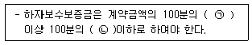
- ㉠ 1, ㉡ 5
- ㉠ 2, ㉡ 5
- ㉠ 2, ㉡ 10
- ㉠ 5, ㉡ 10
(정답률: 알수없음)
91. 사면 재해방지시설인 옹벽 설계시 안정조건으로 틀린 것은?
- 활동에 대한 저항력은 작용하는 수평력의 1.5배 이상이어야 한다.
- 전도에 대한 저항 모멘트는 횡토압에의한 전도모멘트의 2.0배 이상이어야 한다.
- 최대 지반반력 q max는 지반허용지지력 q a 이하가 되어야 한다.
- 옹벽의 합력 작용선이 저판 길이의 중아 1/3밖에 있어야 한다.
(정답률: 알수없음)
92. 자연재해위험개선지구 관리지침상 피해액 산정시 도시유형별 구분에서 인구 100만명 미만의 일반 시급 도시에 해당하는 것은?
- 대도시
- 중소도시
- 전원도시
- 농촌지역
(정답률: 알수없음)
93. 급경사지 재해예방에 관한 법령상 붕괴위험지역의 계측관리에 관한 설명으로 틀린 것은?
- 행정안전부장관은 상시계측관리의 결과등을 고려하여 주민대피를 위한 관리기준을 제정·운영하여야 한다.
- 관리기관은 붕괴위험지역 지반의 위치변화를 사전에 감지하기 위하여 상시계측관리를 할 수 있다.
- 관리기관은 직접 상시계측관리를 하거나 대행하게 하는 경우에는 계측자료를 관할 시장·군수·구청장에게 실시간으로 제공하여야 한다.
- 시장·군수·구청장은 제공받은 계측자료와 자체의 계측자료를 활용하여 긴급상황이 발생하는 때에는 신속히 해당지역주민을 대피시켜야한다.
(정답률: 알수없음)
94. 해안침식의 원리와 원인에 관한 설명으로 틀린 것은?
- 해면상승에 따라 정선(汀線)이 후퇴하는 현상은 동적인 변화를 수반하지 않는 한 해안침식이라고 하지 않는다.
- 어항 등 항내정온도를 위한 방파제 건설로 방파제 상류측은 정선과 평행하게 운반되는 연안표사로 침식된다.
- 좁은 의미에서 해안침식은 사빈해안에 있어서 운반되는 토사량에 비해 유출되는 토사량이 많을 경우를 말한다.
- 폭풍 내습과 같은 단기적으로 발생하는 침식은 해안표사량 변화가 많다.
(정답률: 알수없음)
95. 범람구역 자산조사에서 행정구역별 지역특성을 반영하는 구체적인 자산 항목에 해당하지 않는 것은?
- 주거자산
- 농업자산
- 산업자산
- 금융자산
(정답률: 알수없음)
96. 터널 붕괴사고의 원인중 시공상 오류에 의한 사고가 아닌 것은?
- 콘크리트 라이닝 시공불량
- 록볼트와 강지보의 잘못된시공
- 숏크리트 두께가 시방서와 다른경우
- 지하수의 영향을 충분히 고려하지 못한 경우
(정답률: 알수없음)
97. 다음은 연차별 투입계획에 따른 각 사업비 합계금액이다. 각 시설물별 잔존가치는 축제공 80%, 호안공 10%, 구조물 0%, 보상비100% 정도일 때 연평균 유지관리비는 얼마인가? (단, 연평균 유지관리비는 잔존가치를 고려하여 사업비의 약 2%로 설정하며 계산은 소수점 둘째자리에서 반올림함)
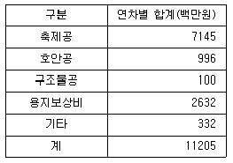
- 55.1백만원
- 169.0백만원
- 224.1백만원
- 393.1백만원
(정답률: 알수없음)
98. 자연재해위험개선지구 관리지침상 투자우선순위 결정을 위한 비용편익분석 방법중 간편법의 장점이 아닌 것은?
- 농작물피해액을 기준으로 피해계수를 적용하므로 예상피해액 산정방법이 간편함
- 침수면적 산정시 홍수빈도개념이 적용되므로 신뢰성이 높음
- 세부적인 자료가 부족하여 연평균 홍수경감기대액의 현재가치 계산이 불가능할 때 시용할 수 있음
- 경제성 분석을 위한 소요자료 및 인력 소요가 적음
(정답률: 알수없음)
99. 바람 방재시설에 해당하지 않는 것은?
- 대피소
- 방수로
- 방풍림
- 방풍설비
(정답률: 알수없음)
100. 자연재해대책법령상 유지·관리 평가대상 방재시설에 해당하지 않은 것?
- 저수지
- 방파제
- 빗물펌프장
- 재난 예·경보시설
(정답률: 알수없음)